Cross-Validation Results: Automatic Report and Interpretation
Metrics by Fold
| Fold |
R2 |
MSE |
RMSE |
MAE |
| 1 |
-0.650216 |
1254.501071 |
35.418937 |
28.221429 |
| 2 |
-1.818966 |
602.945417 |
24.554947 |
17.725000 |
| 3 |
-3.408230 |
428.577917 |
20.702123 |
16.808333 |
| 4 |
-5.154737 |
615.473750 |
24.808743 |
22.058333 |
| 5 |
-0.550230 |
1253.102500 |
35.399188 |
32.783333 |
Feature Importance (mean ± std)
| feature |
mean_importance |
std_importance |
| PL |
0.156439 |
0.040083 |
| CR |
0.145127 |
0.041613 |
| OL |
0.128082 |
0.121669 |
| TL |
0.120132 |
0.048446 |
| OR |
0.097868 |
0.013948 |
| FL |
0.093003 |
0.033756 |
| TR |
0.070591 |
0.009197 |
| PR |
0.063872 |
0.026653 |
| CL |
0.062466 |
0.012378 |
| FR |
0.062421 |
0.023521 |
Main Plots
feature_importances_mean_std.png
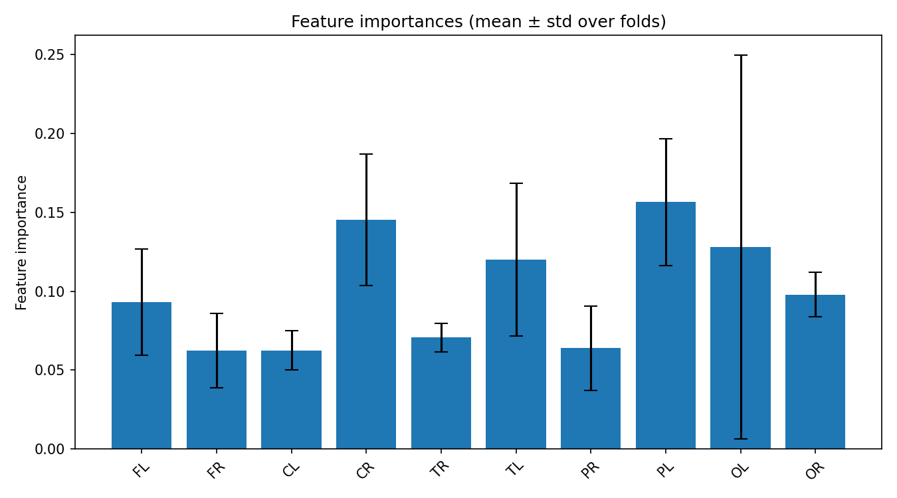
feature_importances_correlation_heatmap.png
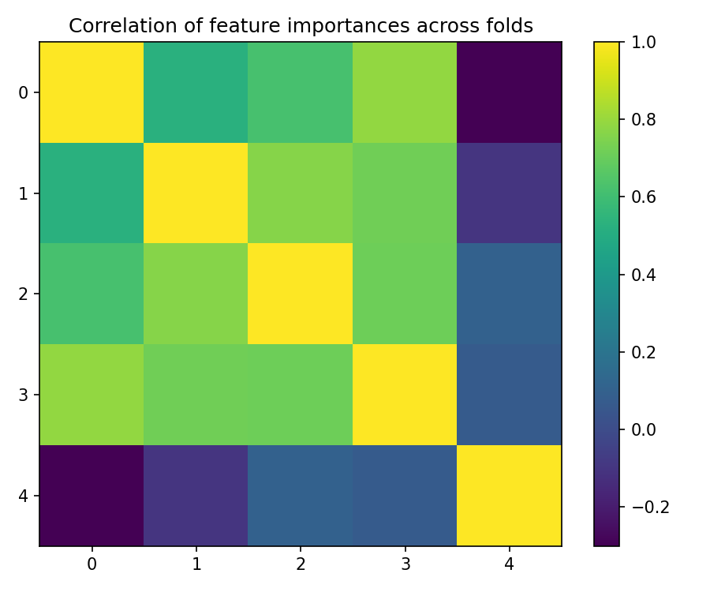
best_fold_5_feature_importances.png
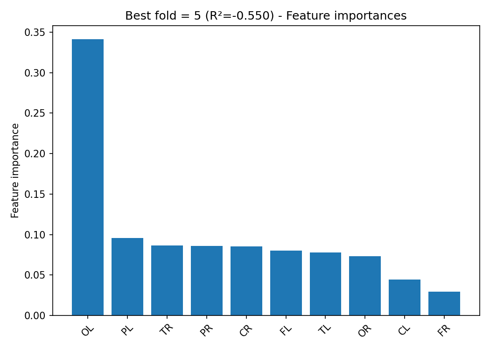
True vs Predicted Scatter Plots (by fold)
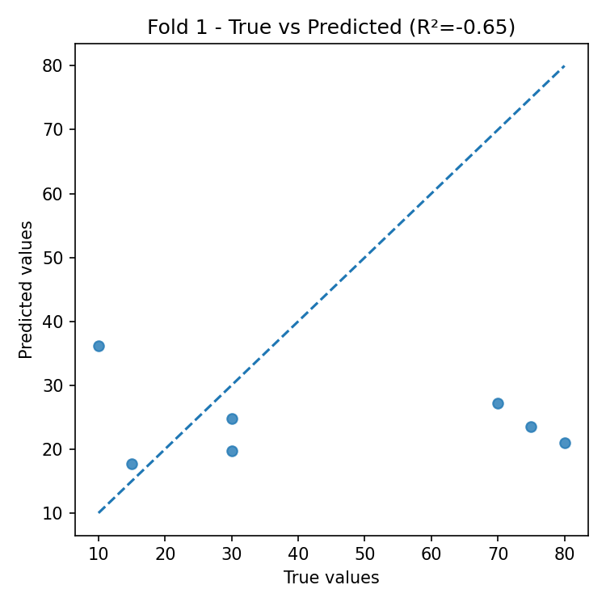
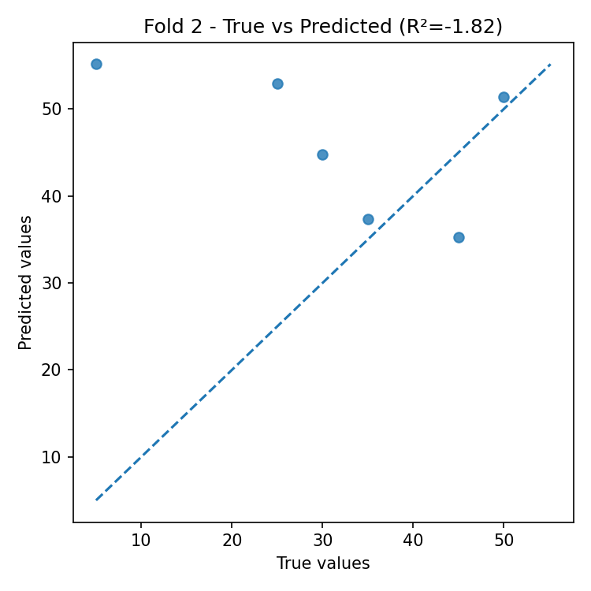
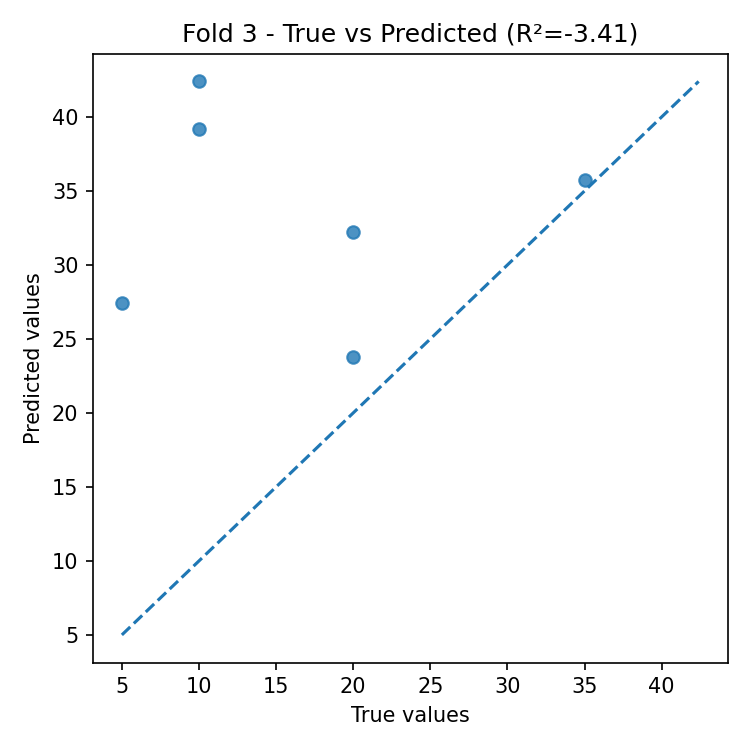
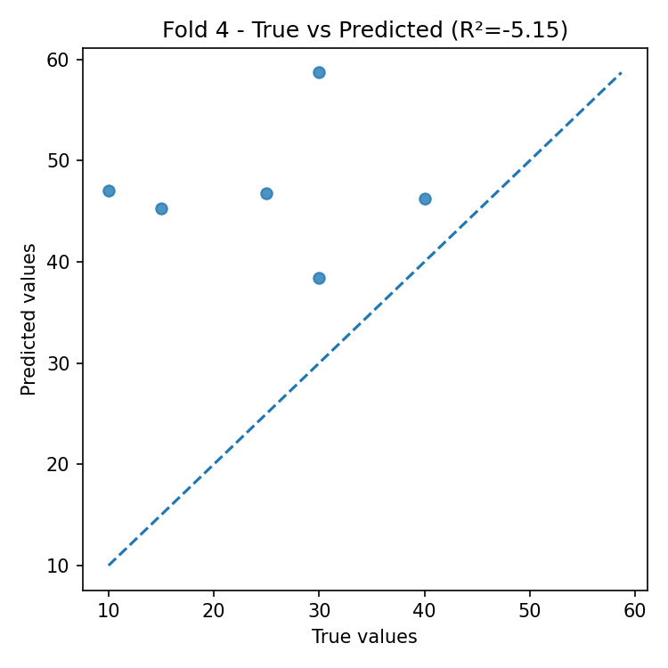
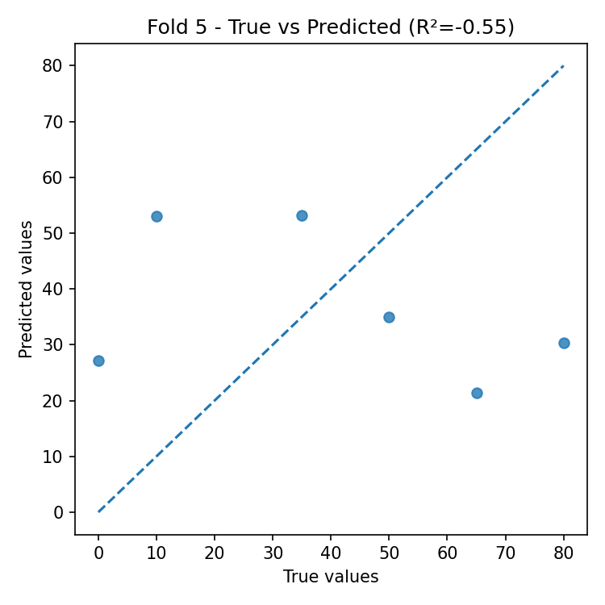
Residual Plots (by fold)
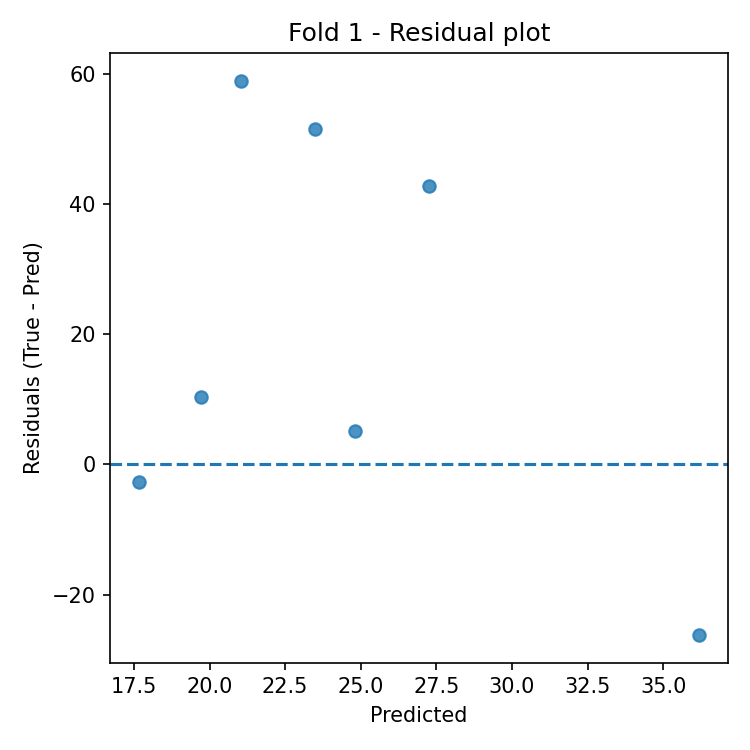
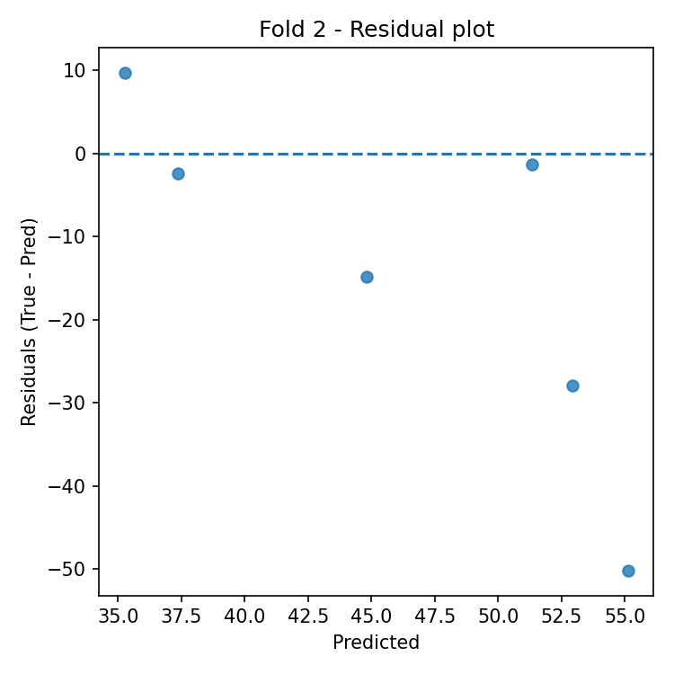
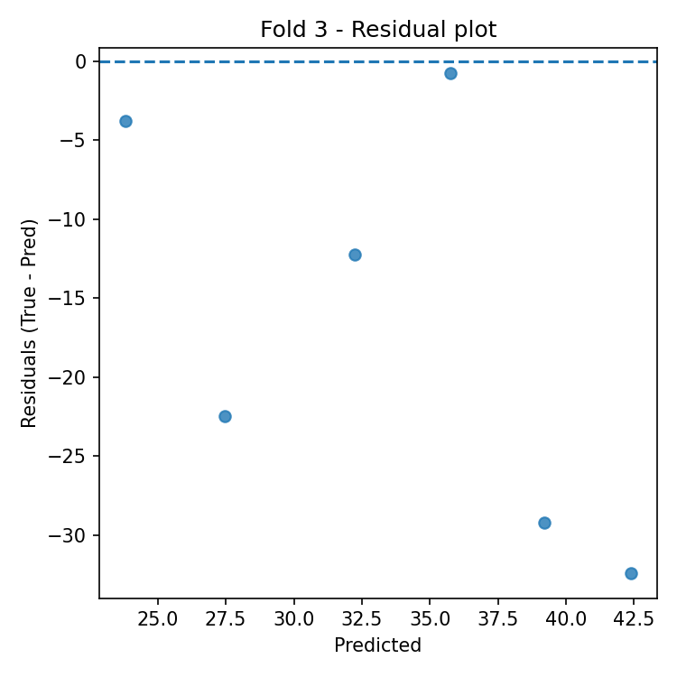
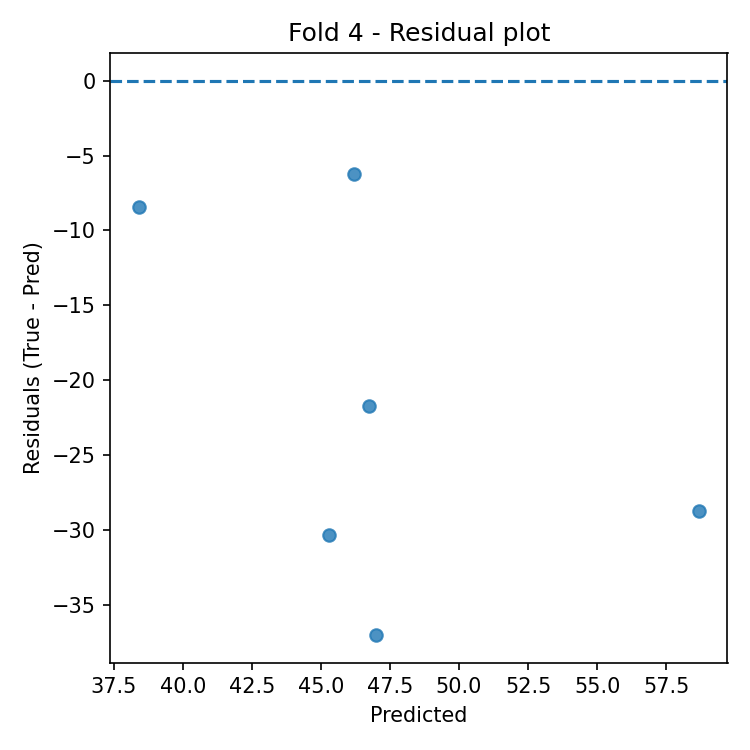
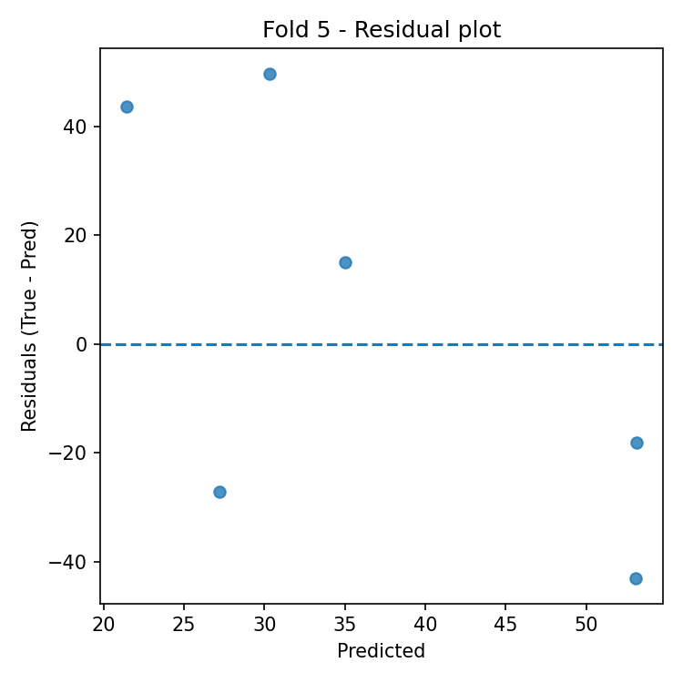
Automatic Interpretation
Overall Performance
- Mean R² across folds: -2.316 (± 1.962).
- Average error: RMSE = 28.177, MAE = 23.519 (same unit as target variable).
Model Stability
- R² variability across folds is high (std = 1.962).
- Average feature importance stability across folds: 0.037 (lower = more stable).
Most Important Features (average across all folds)
- Top-3: PL (0.156), CR (0.145), OL (0.128).
Best Fold
- Best fold: 5 with R² = -0.550.
- In the best fold, the most important features are: OL (0.341), PL (0.096), TR (0.086).
Residual Analysis (best fold)
- Residuals–predictions correlation: -0.675 (0 ≈ absence of linear bias).
- |Residuals|–predictions correlation: -0.267 (positive values indicate possible heteroscedasticity).
- Outliers (|res| > 3·std): 0.